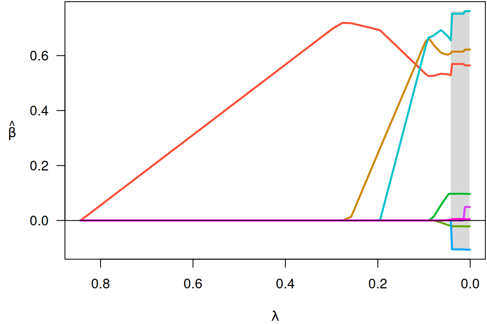
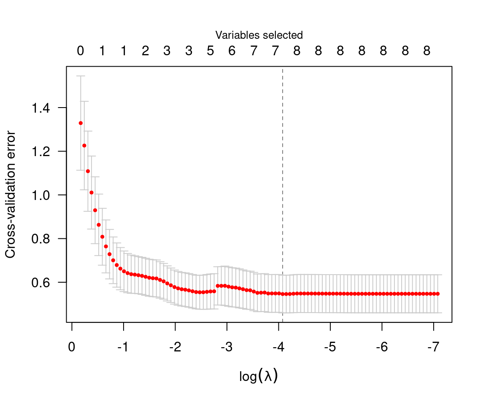

vignettes/web/getting-started.rmd
getting-started.rmdncvreg is an R package for fitting regularization paths
for linear regression, GLM, and Cox regression models using lasso or
nonconvex penalties, in particular the minimax concave penalty (MCP) and
smoothly clipped absolute deviation (SCAD) penalty, with options for
additional L2 penalties (the “elastic net” idea). Utilities
for carrying out cross-validation as well as post-fitting visualization,
summarization, inference, and prediction are also provided.
ncvreg comes with a few example data sets; we’ll look at
Prostate, which has 8 features and one continuous response,
the PSA levels (on the log scale) from men about to undergo radical
prostatectomy:
data(Prostate)
X <- Prostate$X
y <- Prostate$yTo fit a penalized regression model to this data:
fit <- ncvreg(X, y)The default penalty here is the minimax concave penalty (MCP), but SCAD and lasso penalties are also available. This produces a path of coefficients, which we can plot with
plot(fit)
Notice that variables enter the model one at a time, and that at any
given value of \(\lambda\), several
coefficients are zero. To see what the coefficients are, we could use
the coef function:
coef(fit, lambda=0.05)
# (Intercept) lcavol lweight age lbph svi
# 0.35121089 0.53178994 0.60389694 -0.01530917 0.08874563 0.67256096
# lcp gleason pgg45
# 0.00000000 0.00000000 0.00168038The summary method can be used for post-selection
inference:
summary(fit, lambda=0.05)
# MCP-penalized linear regression with n=97, p=8
# At lambda=0.0500:
# -------------------------------------------------
# Nonzero coefficients : 6
# Expected nonzero coefficients: 2.54
# Average mfdr (6 features) : 0.424
#
# Estimate z mfdr Selected
# lcavol 0.53179 8.880 < 1e-04 *
# svi 0.67256 3.945 0.010189 *
# lweight 0.60390 3.666 0.027894 *
# lbph 0.08875 1.928 0.773014 *
# age -0.01531 -1.788 0.815269 *
# pgg45 0.00168 1.160 0.917570 *In this case, it would appear that lcavol,
svi, and lweight are clearly associated with
the response, even after adjusting for the other variables in the model,
while lbph, age, and pgg45 may be
false positives included simply by chance.
Typically, one would carry out cross-validation for the purposes of assessing the predictive accuracy of the model at various values of \(\lambda\):
cvfit <- cv.ncvreg(X, y)
summary(cvfit)
# MCP-penalized linear regression with n=97, p=8
# At minimum cross-validation error (lambda=0.0169):
# -------------------------------------------------
# Nonzero coefficients: 7
# Cross-validation error (deviance): 0.55
# R-squared: 0.59
# Signal-to-noise ratio: 1.42
# Scale estimate (sigma): 0.739
# MCP-penalized linear regression with n=97, p=8
# At lambda=0.0169:
# -------------------------------------------------
# Nonzero coefficients : 7
# Expected nonzero coefficients: 2.71
# Average mfdr (7 features) : 0.386
#
# Estimate z mfdr Selected
# lcavol 0.569546 8.902 < 1e-04 *
# svi 0.752397 4.131 0.0039506 *
# lweight 0.614420 3.491 0.0352445 *
# age -0.020913 -2.065 0.6238365 *
# pgg45 0.005324 1.991 0.6577498 *
# lcp -0.104959 -1.946 0.6773540 *
# lbph 0.097353 1.873 0.7069055 *
plot(cvfit)
The value of \(\lambda\) that
minimizes the cross-validation error is given by
cvfit$lambda.min, which in this case is 0.017. Applying
coef to the output of cv.ncvreg returns the
coefficients at that value of \(\lambda\):
coef(cvfit)
# (Intercept) lcavol lweight age lbph svi
# 0.494154801 0.569546027 0.614419811 -0.020913467 0.097352536 0.752397339
# lcp gleason pgg45
# -0.104959403 0.000000000 0.005324465Predicted values can be obtained via predict, which has
a number of options:
predict(cvfit, X=head(X)) # Prediction of response for new observations
# 1 2 3 4 5 6
# 0.8304040 0.7650906 0.4262072 0.6230117 1.7449492 0.8449595
predict(cvfit, type="nvars") # Number of nonzero coefficients
# 0.01695
# 7
predict(cvfit, type="vars") # Identity of the nonzero coefficients
# lcavol lweight age lbph svi lcp pgg45
# 1 2 3 4 5 6 8Note that the original fit (to the full data set) is returned as
cvfit$fit; it is not necessary to call both
ncvreg and cv.ncvreg to analyze a data set.
For example, plot(cvfit$fit) will produce the same
coefficient path plot as plot(fit) above.